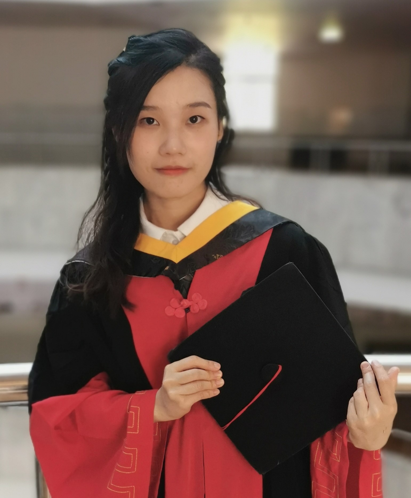

|  | 弘深青年教师 |
我是就职于重庆大学计算机学院计算智能与信息安全团队的一名青年教师，得到重庆大学“弘深青年教师特别项目”的资助
我的研究方向主要包括: 机器学习，差分隐私，物联网安全等。
很高兴能和各位感兴趣的老师和同学进行交流！
2020.09--2021.09 奥克兰大学 联合培养（online）外导：Bakh Khoussainov
2016.09--2018.06 北京理工大学 专业硕士学位 导师：胡晶晶
2012.09--2016.06 北京理工大学 工学学士学位 班主任：赵丰年，田东海
MSDC: Exploiting Multi-State Power Consumption in Non-intrusive Load Monitoring based on A Dual-CNN Model
Jialing He,Jiamou Liu, Zijian Zhang*, Yang Chen, Yiwei Liu, Bakh Khoussainov and Liehuang Zhu
AAAI [CCF A][PDF]
Video Aficionado: We Know What You Are Watching
Jialing He, Zijian Zhang*, Jian Mao, Liran Ma, Bakh Khoussainov, Rui Jin, and Liehuang Zhu*
IEEE Transactions on Mobile Computing. [CCF A][PDF]
InFocus: Amplifying Critical Feature Influence on Non-Intrusive Load Monitoring through Self-Attention Mechanisms
Jialing He, Zijian Zhang*, Liran Ma, Zhouyu Zhang, Meng Li, Bakh Khoussainov, Jiamou Liu, and Liehuang Zhu*
IEEE Transactions on Smart Grid. [SCI 1区][PDF]
An efficient and accurate nonintrusive load monitoring scheme for power consumption
Jilaing He, Zijian Zhang*, Liehuang Zhu*, Zhesi Zhu, Jiamou Liu, and Keke Gai
IEEE Internet of Things Journal. [SCI 1区][PDF]
Contrastive Fusion Representation: Mitigating Adversarial Attacks on VQA Models
Jilaing He, Zhen Qin, Hangcheng Liu, Shangwei Guo*, Biwen Chen, Ning Wang, and Tao Xiang
ICME [CCF B]
Provable data integrity of cloud storage service with enhanced security in the internet of things
Jilaing He, Zijian Zhang, Meng Li, Liehuang Zhu*, and Jingjing Hu*
IEEE Access. [SCI 3区][PDF]
An efficient supervised energy disaggregation scheme for power service in smart grid
Weilie Liu, Jilaing He, Meng Li, Rui Jin, Jingjing Hu*, and Zijian Zhang
Intelligent Automation and Soft Computing. [SCI 4区][PDF]
Proof of Continuous Work for Reliable Data Storage over Permissionless Blockchain
Hao Yin, Zijian Zhang*, Jilaing He, Liran Ma, Liehuang Zhu*, Meng Li, and Bakh Khoussainov
IEEE Internet of Things Journal. [SCI 1区][PDF]
Blockchain Meets Covert Communication: A Survey
Zhuo Chen, Liehuang Zhu, Peng Jiang*, Can Zhang, Feng Gao, Jialing He, Dawei Xu, Yan Zhang
IEEE Communications Surveys & Tutorials. [SCI 1区](IF:39.97)[PDF]
An efficient sparse coding-based data-mining scheme in smart grid
Dongshu Wang, Jilaing He, Mussadiq Abdul Rahim, Zijian Zhang*, and Liehuang Zhu
International Conference on Mobile Ad-Hoc and Sensor Networks (MSN 2017). CCF C[PDF]
Non-intrusive load monitoring algorithms for privacy mining in smart grid
Zijian Zhang, Jilaing He*, Liehuang Zhu, and Kui Ren
Advances in cyber security: principles, techniques, and applications, Springer. 专著[PDF]
2012年-2016年
人民奖学金二等一次，三等两次。
2017年9月
硕士二等学业奖学金
2018年9月-2022年6月
博士特等学业奖学金一次，一等一次，二等两次
2019年全国高校区块链大赛一等奖（省部级）
2021年北京理工大学优秀学生称号（校级）
优秀博士论文（校级）
北京理工大学研究生科技创新项目重点（项目号：2019CX10014） 去中心化网络架构下的可靠存储技术研究 (4万) 项目负责人
重庆市自然科学基金面上项目（项目号：CSTB2023NSCQ-MSX0693） 支持智能分析的安全高效耗电隐私保护 (10万) 项目负责人
国家自然科学基金青年基金项目（项目号：6230072263） 支持动态隐私保护的安全智能电力管理机制 (30万) 项目负责人
国家重点研究计划 区块链软硬件协同关键技术研发 (1470万) 项目骨干